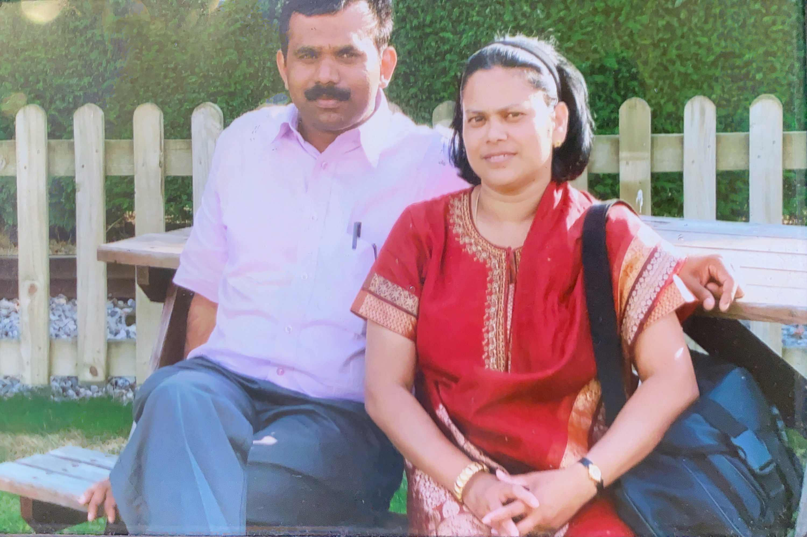
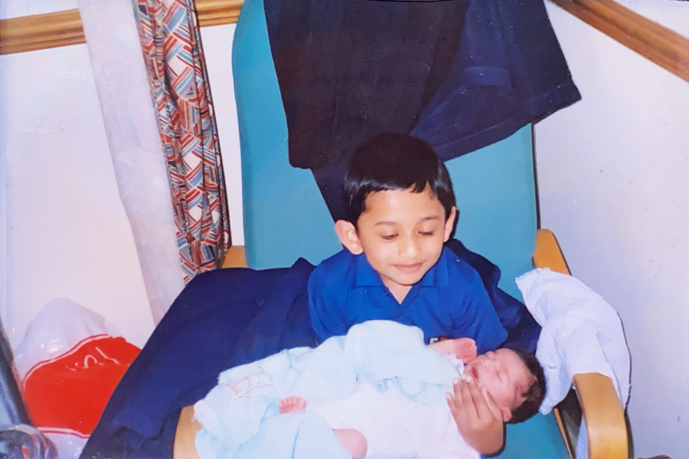

I was born in India. When I was young, my parents made a big sacrifice and moved to the United Kingdom. My brother was born a little after that. Since then I have managed to make great friends, experience amazing things and right now, I am doing an internship with Boeing!

